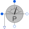

PowerSensorMultiphase instantaneous power sensor |

|
Diagram
{kind=link}
Information
This information is part of the Modelica Standard Library maintained by the Modelica Association.
This power sensor measures instantaneous electrical power of a multiphase system and has a separated voltage and current path. The plugs of the voltage path are pv and nv, the plugs of the current path are pc and nc. The internal resistance of each current path is zero, the internal resistance of each voltage path is infinite.
Connectors (5)
| pc |
Type: PositivePlug Description: Positive plug, current path |
|
|---|---|---|
| nc |
Type: NegativePlug Description: Negative plug, current path |
|
| pv |
Type: PositivePlug Description: Positive plug, voltage path |
|
| nv |
Type: NegativePlug Description: Negative plug, voltage path |
|
| power |
Type: RealOutput |
Components (4)
| voltageSensor |
Type: VoltageSensor |
|
|---|---|---|
| currentSensor |
Type: CurrentSensor |
|
| product |
Type: Product[m] |
|
| sum |
Type: Sum |
Used in Examples (8)
|
Modelica.Electrical.MultiPhase.Examples
Test example with multiphase components |
|
|
Modelica.Electrical.MultiPhase.Examples |
|
|
Modelica.Magnetic.FundamentalWave.Examples.Components
Comparison of equivalent circuits of eddy current loss models |
|
|
Modelica.Magnetic.FundamentalWave.Examples.BasicMachines
Electrical excited multi phase synchronous machine operating as generator |
|
|
Modelica.Magnetic.QuasiStatic.FundamentalWave.Examples.BasicMachines.InductionMachines
Induction machine with squirrel cage started directly on line (DOL) |
|
|
Modelica.Magnetic.QuasiStatic.FundamentalWave.Examples.BasicMachines.InductionMachines
Starting of induction machine with slip rings |
|
|
Modelica.Magnetic.QuasiStatic.FundamentalWave.Examples.BasicMachines.SynchronousMachines
Permanent magnet synchronous machine operated at mains with step torque load |
|
|
Modelica.Magnetic.QuasiStatic.FundamentalWave.Examples.BasicMachines.SynchronousMachines
Electrical excited synchronous machine operating as generator |